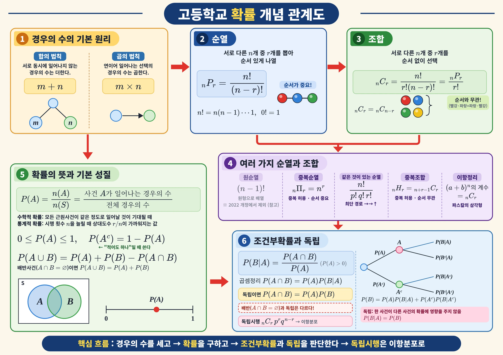
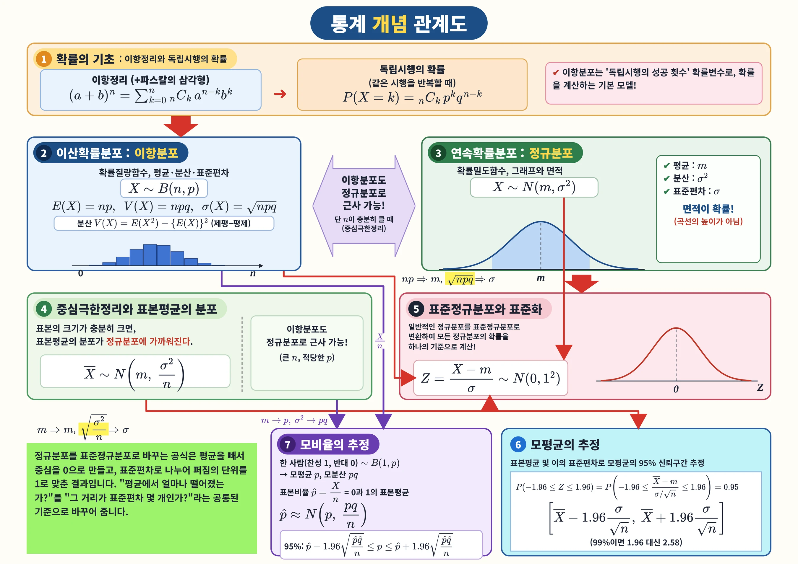

← 고등수학 목차 및 개념
관계도의 블록을 누르면 개념 설명과 연습문제 15개(풀이 포함)로 갑니다
확률과 통계 개념관계도
경우의 수 → 확률 → 조건부확률·독립 → 이항분포 → 정규분포 → 추정
확률
통계
인쇄용 파일
확률
Ⅰ·Ⅱ

크게 보기 ↗
0
경우의 수의 기초
→
1
여러 가지 순열
→
2
중복조합과 이항정리
→
3
확률의 뜻과 활용
→
4
조건부확률과 독립
→
통계
Ⅲ

크게 보기 ↗
2
이산확률변수
→
3
이항분포
→
★
이항분포의 정규분포 근사
→
4
연속확률분포 · 정규분포
→
5
표준정규분포와 표준화
→
6
표본평균의 분포
→
7
모평균의 추정
→
8
모비율의 추정
→
인쇄용 (A4 가로)
확률+통계 양면 PDF
확률 PDF
통계 PDF